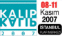

|
ARC Dizayn, kariyer eðitimlerinin odaðý olan Ýstanbul’da
bireysel ve kurumsal olarak hizmet vermektedir;
Bilgimiz, tecrübeniz olsun!..
ARC Dizayn olarak hedefimiz;
Bilgisayar destekli tasarým ve Ýmalat Programlarýnýn (CAD/CAM/CAE) eðitimini vermek,
piyasanýn endüstriyel tasarým eksiðini kapatmak, geliþen teknolojiyi yakýndan takip ederek,
tecrübe ve birikimlerini Türk sanayicisi ile paylaþmak ve bu sayede sektörde ihtiyaç duyulan
kalifiye elemanlarýn kiþisel geliþimlerine katkýda bulunmaktadýr...
- CAD/CAM Eðitimi, CAD Üst düzey Endüstriyel Tasarým eðitimi,
- MOLD, Plastik kalýpçýlýðý eðitimi,
- ASSEMBLY, Makine Ýmalatçýlarýna yönelik; çizim, montaj, hareketlendirme
ve makine sanal ortamda çalýþtýrarak oluþabilecek hatalarý tespit etme eðitimi,
- PROGRESSIVE, Kesme, bükme açýlým ve istasyonlu sac kalýpçýlýðý eðitimi,
- CAM, CNC Torna ve Ýþleme Merkezleri için Bilgisayar destekli iþleme eðitimi,
CNC makinenize uygun "Post" çýkartabilme.
(Eðitimlerimiz, M.E.B. onaylý dershanemizde veya firmanýzda birebir verilmektedir)
*** Standýmýza davetlisiniz *** |
|
18-21 Ekim 2007 tarihleri arasýnda düzenlenen
TIME 2007 4. Uluslararasý üretim Teknolojileri Fuarý'nda
Hall A-09.1 No'lu standýmýza bekleriz. |
|  |
08-11 Kasým 2007 tarihleri arasýnda düzenlenen
KALIP 2007 3. Ýstanbul Kalýp Fuarý'nda
Hall A 105 No'lu standýmýza bekleriz. |
Diðer faaliyet alanlarýmýz
TopSolid CAD/CAM/CAE Programýnýn bayiliði,
Endüstriyel Tasarým -
Tersine Mühendislik -
Prototip Çalýþmalarý,
Ýmalat ve Üretim Danýþmanlýðý... |
|